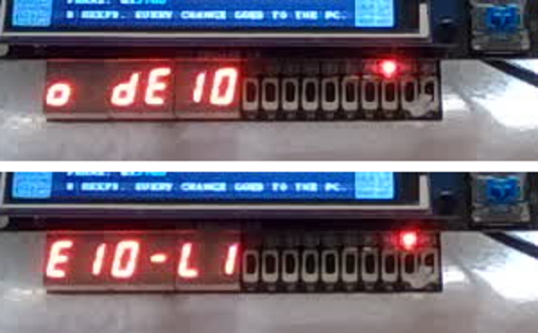

08 · Switches, keys, LEDs and the 7-segment display
The board's own inputs and outputs, done properly: debounced switches and keys, a press counter in decimal, and text scrolling across the six digits.
The repo keeps the full project (.qar, plus the sources here) but no prebuilt bitstream: one build (a few minutes) makes the .sof on your computer.
What you will see

| Mode | 7-segment | LEDs |
|---|---|---|
| SW9 up | "HELLO dE10-LItE BKM" scrolls; SW3..SW0 set the speed | A light running back and forth |
| SW9 down | Number of KEY0 presses (0 to 999999); KEY1 resets it | LEDR mirrors the switches |
Your PC (python scripts/de10.py log): SW=3FF, KEY0 down count=000005, KEY1 down: reset.
Block diagram
The parts
| Thing | Pins | Know this |
|---|---|---|
| SW9..SW0 | F15 B14 A14 A13 B12 A12 C12 D12 C11 C10 | 1 = up. They bounce like buttons when flipped: debounce them |
| KEY1, KEY0 | A7, B8 | 0 when pressed (pull-up). Schmitt-trigger inputs, but still bounce |
| LEDR9..LEDR0 | B11 A11 D14 E14 C13 D13 B10 A10 A9 A8 | 1 = on |
| HEX5..HEX0 | 8 pins each | 0 = segment on (active low); bit 7 is the decimal point |
All pins are in lib/board/de10_lite_pins.csv; scripts/new_project.py assigns them from your top module's port names.
Showing text: seg7_char
seg7_char c(.ch("E"), .dp(1'b0), .seg(HEX5)); // any ASCII: digits, most letters, - _ =lib/rtl/seg7_char.sv turns an ASCII character into segments: digits, the letters that have a fair 7-segment shape
(A b C d E F G H I J L n o P q r S t U y), and a dash for the rest. Numbers in decimal: bin2bcd then 8'h30 + digit.
Counting presses: debounce, then an edge
debounce #(.N(12), .STEADY(500_000)) deb(.clk(clk), .in({~KEY, SW}), .out({key_down, sw})); // 10 ms
always @(posedge clk) key_d <= key_down;
wire [1:0] press = key_down & ~key_d; // one clock per pressWithout the debounce a single press often counts 2 to 5 times.
Measured on the board
- Text mode (all switches up): the camera shows the message moving ("o dE10", then "E10-LI" a second later) and the running light.
- USB:
SW=3FFat start-up. - Resources: 1,715 logic elements (3 %). Timing: no negative slack.
Count mode (SW9 down, KEY0 / KEY1) needs someone at the board; it is still to be checked by hand.
Run it
python scripts/de10.py build examples/08_board_io
python scripts/de10.py program examples/08_board_io
python scripts/de10.py log 30Build it yourself
python scripts/new_project.py examples/08_board_io board_io_top --lib print debounce bcd seg7
python scripts/de10.py build examples/08_board_ioFiles
| File | What |
|---|---|
src/board_io_top.sv | The example |
lib/rtl/seg7_char.sv | ASCII to 7-segment |
lib/rtl/debounce.sv, bin2bcd.sv | Debouncer; binary to decimal |